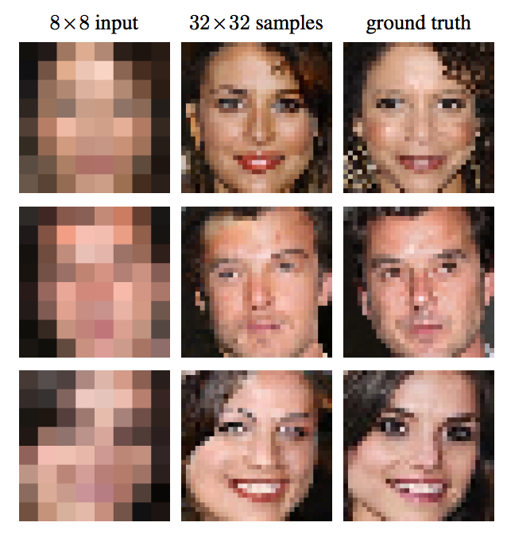

Methods
Computational Economics @ Bundesbank
Introduction
Dynamic
Dynamic programming comes in two flavours:
- Markov Discrete Problems (MDP)
- states and controls take discrete values
- Approximate Dynamic Programming (ADP)
- states and controls take continuous values
For ADP, objects of interest (shocks, decision rules) live in infinitely dimensional spaces.
They need be be quantized with a finite set of parameters.
This motivates the study of:
- interpolation (for the decision rule)
- discretization (for the shocks)
We will also need optimization but we will defer it to december.
Interpolation
Approximation
Define two continuous sets \(X\in R^p\), \(Y \in R^q\).
Take a dataset: \((x_i, y_i)_{i\in[1,N]} \in X \times Y\)
Take \(\tilde{x} \in X \setminus \{x_i\}_{i\in[1,N]}\). What should be the matching \(\tilde{y}\) ?
Approximation method:
- Discover implicit relation \(y=f^t(x)\) (the model) then compute \(\tilde{y}=f^t (\tilde{x})\).
Concretely we choose \(f\) from a family \(\mathcal{F}\) of functions parameterized by a parameter \(\theta\), the approximation family.
- we approximate the true \(f^t(x)\) by some \(f(x;\theta)\)
Interpolation vs. Regression
- Interpolation: \(f\) is chosen such that \(\forall n, y_n=f(x_n)\)
- Regression: \(f\) is chosen so as to minimize a fitness criterium such as
- \(\min_f \sum_n \left( y_n-f(x_n) \right)^2\)
- or \(\min_{\theta} \sum_n \left( y_n-f(x_n;\theta) \right)^2 + \lambda || \theta ||^2\) with \(\lambda>0\)
- Confusing remarks:
- sometimes one differentiate interpolation (when \(\tilde{ x}\)) is in the convex hull of \(X\) and extrapolation (when \(\tilde{x}\) is outside)
- some applied mathematicians tend interpolation for everything(i.e. interpolate=evaluate f outside of X)
Examples (1): Linear Interpolation
1d Graph. Join the dots. Linear/Spline
2d Graph: Regression
Conclusion: interpolate only if \(f\) is known precisely on \(X\)
Example (2)
- \(X\) and \(Y\): large databases of low and high resolutions images
- \(\mathcal{F}\): neural network
Why do we need it?
- In economics, we often solve a problem \(\Phi(f)=0\) where \(f\) is a function: \(\forall s, \Phi(f)(s) = 0\)
- If we approximate \(f\) by some element \(f(;\theta)\in\mathcal{F}\) we just need to identify a finite set of parameters \(\theta \in R^n\)
- How do we identify \(\theta\)?
- choose a finite set of \(n\) criteria that must be met
- \(f\) is pinned down uniquely
- example: colocation, choose \(s_1, ..., s_n\). Find \(f\) such that \(\forall i=1:n, \Phi(f)(s_i) = 0\)
- choose higher number of objectives (\(p>n\)) that must be minimized:
- example: regression, choose \(s_1, ..., s_p\). Find \(f\) such that minimize \(\sum_i \Phi(f)(s_i)^2 = 0\)
- choose a finite set of \(n\) criteria that must be met
Several interpolation flavours
- local vs spectral:
- local: functions in \(f\) have compact support
- spectral: noncompact support
- linear vs nonlinear:
- \(\mathcal{F}\) is a vector space: \(f(x) \approx \sum_{i=1}^N \theta_n b_n(x)\) where \(b_n\) is a base of \(\mathcal{F}\)
- nonlinear: wavelets, neural networks, ….
Linear Splines
- Take function \(f\) defined on an interval \([a,b]\). Suppose the value is known at \((a=x_1, ... x_N=b)\). Denote \(y_i = f(x_i)\).
- Join the dots: define a piecewise linear function as \[\forall x \in [x_i, x_{i+1}], \tilde{f}(x) = y_i + \underbrace{\frac{x-x_i}{x_{i+1}-x_i}}_{\text{barycentric coordinate}} (y_{i+1} - y_i)\]
Linear Splines
- Alternate view: \[\tilde{f}(x) = \sum_{i=1}^N y_i B^i_1(x)\] where \(b_1^i(x)=\frac{x-x_{i-1}}{x_i-x_{i-1}}.1_{x\in[x_{i-1},x_i]} + (1-\frac{x-x_{i}}{x_{i+1}-x_{i}}).1_{x\in [x_i, x_{i+1}]}\)
- \((B^i)\) is an interpolation basis
Splines
\(n\)-th order spline : piecewise polynomial function that is \(n\) times differentiable except on a finite set of break points (aka knots), where it is \((n-1)\) times differentiable.
in practice the data points are the breakpoints
example: order 2
- suppose \(\tilde{f}(x_i)\) and \(\tilde{f}^{\prime}(x_i)\) are known, choose the coefficients for the patch \(p_{i+1}(x) = a_{i+1}x^2+b_{i+1}x + c_{i+1}\)
- Already two constraints. Condition \(p_{i+1}(x_{i+1})=\tilde{f}(x_{i+1})\) supplies another one.
- Do it for every patch. Note that it requires to set \(f^{\prime}(a)\) beforehand.
Basis Splines (much better)
Define \[B_{i,1}(x) = 1_{x \in [x_i, x_{i+1}]}\] \[B_{i,k+1}(x) = \frac{x-x_i}{x_{i+k}-x_i}B_{i,k}(x) + \frac{x_{i+k+1}-x}{x_{i+k+1}-x_{i+1}}B_{i+1,k}(x)\]
Properties:
- All basis splines have compact support.
- If grid is regularly spaced there is \(B_k\) such that \(B_{i,k}(x) = B_k(x-x_i)\)
Theorem (de Boor): Any spline of order \(k\) on the knots \((x_i)\) can be expressed as a linear combination of the basis splines \((B_{i,k})\).
Basis splines

Basis Splines
Basis splines are not interpolating
Unfortunately basis splines are not “interpolating” in the sense that in general \[f(x_i) \neq \sum_{n} f(x_n) B_{n,k} (x_i)\]
One must choose other coefficients \((c_n)\) which satisfy:
\[y_i = \sum_n c_n B_{n,k} (x_i)\]
- there are more coefficients than data points:
- requires boundary conditions
- \(f''=0\): natural spline
- requires boundary conditions
- going from \(y_n\) to \(c_n\) is called prefiltering
- there are more coefficients than data points:
In practice: Interpolations
import numpy as np
from scipy.interpolate import RegularGridInterpolator
f = lambda x: np.log(x)
xs = np.linspace(1, 5, 10)
A = f(xs)
# linear interpolation
interp_linear = RegularGridInterpolator((xs,), A)
interp_linear([1.3]) # interpolate
# cubic spline interpolation
interp_cubic = RegularGridInterpolator((xs,), A, method="cubic")
interp_cubic([1.3]) # interpolateMental break: matrix conditioning
- Suppose you want to solve vector equation \(A x=y\). Will a small error in \(y\) affect a lot the value of \(x\)? (in particular round-off errors)
- condition number: \(\lim_{\epsilon\rightarrow 0} \sup_{\delta y\leq \epsilon} \frac{\delta x}{\delta y}\)
- or \(\kappa(A) = ||A^{-1}|| || A||\) where \(||. ||\) is a subordonate norm.
- if very-large: the matrix is ill conditioned
- What makes a matrix ill-conditioned?
- some rows/columns are very small, others are gigantic
- rows/columns are almost colinear
Polynomial approximation
Fitting polynomials
Let’s approximate: \(f(;\theta) = \sum_{n=0}^K \theta_k x^k\).
We need \((K+1)\) points to fit a polynomial of order \(K\). Let’s take grid points \((x_0, ... x_{K})\) and denote \(y_k=f(x_k)\)
We need to solve in \((\theta_k)_{k=[0,K]}\):
\[\forall n \in[0,K], \underbrace{\sum_k \theta_k (x_n)^{k}}_{M \theta} = y_k\]
Vandermonde Matrix
- \(M\) has a special structure, a Vandermode matrix: \[ M = \begin{bmatrix} 1 & x_0 & x_0^2 \cdots & x_0^K \\\\ 1 & x_1 & x_1^2 \cdots & x_1^K \\\\ 1 & x_2 & x_2^2 \cdots & x_2^K \\\\ \vdots & \vdots & \ddots & \vdots \\\\ 1 & x_K & x_K^2 \cdots & x_K^K \end{bmatrix} \]
- Vandermonde matrix is ill-conditioned if points are too close or if \(K\) is high.
Orthogonal polynomials
Define a scalar product over functions on the domain \([a,b]\) by choosing a positive weight function \(w(x)\). \[<P,Q> = \int_a^b w(x) P(x)Q(x) dx\]
Construct an orthogonal base \((T_n)_{n=[1,K]}\).
Approximate \[f(x)\approx f(x; \theta) = \sum_{n=0}^K \theta_n T_n(x)=\sum_{n=0}^K <f|T_n> T_n(x)\]
- this is optimal for the norm associated to \(<>\) (projection on the orthogonal base)
Vandermonde matrix
Coefficients can still be identified by inverting: \[\forall n \in[0,K] \underbrace{\sum_k \theta_k T_k(x_n)}_{M \theta} = y_n\]
\[ M = \begin{bmatrix} T_0(x_0) & T_1(x_0) & \cdots & T_K(x_0) \\\\ T_0(x_1) & T_1(x_1) & \cdots & T_K(x_1) \\\\ T_0(x_2) & T_1(x_2) & \cdots & T_K(x_2) \\\\ \vdots & \vdots & \ddots & \vdots \\ T_0(x_K) & T_1(x_K) & \cdots & T_K(x_K) \end{bmatrix} \]
Problem: Runge error
- Red: Runge function \(f(x)=\frac{1}{1+25x^2}\)
- Blue: interpolates at 6, regularly-spaced, points
- Green: interpolates at 10, regularly-spaced, points
- What happens when interpolation order increases?
- oscillations increase.
- Does it contradict Stone-Weierstrass theorem ? No.
- Solutions:
- use regression method instead
- choose the interpolation points wisely

Chebychev Nodes
- There is an optimal way to choose the interpolation points:
- the roots of \(cos(\frac{2 k - 1}{2n} \pi)\) for [-1,1]
- rescale for a finite interval [a,b]
- for the interpolating polynomial: \[|f(x) - P_n(x)| \leq \frac{1}{2^n (n+1)!} \max_{\xi \in [-1,1]} |f^n(\xi)|\]
Chebychev polynomials
- Chebychev polynomials (of the first kind) have their zeros on the nodes.
- Definitions:
- \(T_n(x) = \cos(n \arccos(x))\) (in [0,1])
- recursive: \(T_0(x)=1\), \(T_1(x)=x\), \(T_n(x)=2 x T_{n-1}(x)-T_{n-2}(x)\)
- Very good choice:
- matrix \(M\) is well conditioned: \(\sqrt{2}\)
Chebychev Polynomial

Multidimensional interpolation
- Consider a function \(f\) defined on a space \(X_1 \times X_d\)
- Take \(d\) grids \(\mathcal{G}_1\subset X_1, ..., \mathcal{G}_d\subset X_d\) with linear approximation bases \(\mathcal{B}_1=(b_1^1, ... b_1^{N_1}),..., \mathcal{B}_d=(b_d^1, ... b_d^{N_d})\).
- Then \(f\) can be approximated by \(f(x_1, ... x_d ; \theta) = \sum_{i_1=1}^{N_1} ... \sum_{i_d=1}^{N_d} \theta_{i_1, ... i_d} \underbrace{b_{i_1}^1(x_1) ... b_{i_d}^d(x_d)}_{\text{Product Base}}\)
- Morality:
- linear appoximation along each dimension induces a natural (multi)-linear in many dimensions
- Coefficients are still the solution of a linear system: \[M \theta = y\]
- but \(M\) has a special structure (tensor product)
- Problem: number of coefficients to determine increases exponentially with number of dimensions:
- “Curse of Dimensionality”
Multidimensional interpolation (2)
- Ways to mitigate the curse of dimensionality
- Remedies:
- sparse grids
- adaptive approximation
- delaunay tessellation
- adaptive sparse grid
- neural networks
- …
- No black-magic theorem: there is no solution to the curse of dimensionality
- .. but there are methods to adapt to problem whose intrinsic dimension is smaller than the actual number of variables
Delaunay and sparse grid

Python libraries
scipy.interpolationmany common methodsinterpolation.py- linear and cubic splines
- jitted with numba
- also complete and smolyak polynomials
Discretization
Several kinds of Discretization
- approximate operator with a finite number of iterations:
- compute \(\int_a^b f(x) dx\)
- compute \(E_\omega f(\omega)\)
- represent an infinite dimensional object with a finite set of parameters:
- \(f \equiv (f(x_i))_{i=1:N}\) with \(x_i=a+\frac{i-1}{N-1}(b-a)\)
- discretize arguments
- \(\omega \equiv (\mu_i, \omega_i)_{i=1:N}\) such that \(E_\omega f(\omega) \approx \sum_i \mu_i f(\omega_i)\) (quantization)
- \(f \equiv (f(x_i))_{i=1:N}\) with \(x_i=a+\frac{i-1}{N-1}(b-a)\)
- discretize continous process by a discrete one:
- continuous markov chain to discrete markov Chain
Discretizing an AR1
- Take \(AR1\) process \[x_t = \rho x_{t-1} + \epsilon_t\]
- with \(|\rho| <1\) and \(\epsilon \sim N(0,\sigma)\)
- Can we replace \((x_t)\) by a discrete markov chain?
- approximate version:
- good time \(x^g\) and bad time \(x^b\). Probability \(\pi\) of staying in the same, \(1-\pi\) of switching.
- two systematic methods (available in QuantEcon.py)
- Tauchen
- Rouwenhorst
- approximate version:
AR1: Tauchen
The unconditional distribution of an AR1 is a normal law \(\mathcal{N}(0,\frac{\sigma}{\sqrt{1-\rho^2}})\)
Choose \(m>0\), typically \(m=3\)
Bound the process: \(\underline{x} = -m \frac{\sigma}{\sqrt{1-\rho^2}}\) and \(\overline{x} = m \frac{\sigma}{\sqrt{1-\rho^2}}\)
Define the \(N\) discretized points (\(i\in[1,n]\)): \(y_i = \underline{x} + \frac{i-1}{N-1}(\overline{x}-\underline{x})\)
Define the transitions:
\[\pi_{ij} = prob \left( y_{t+1}=y_j|y_t=y_i\right)\] \[\pi_{ij} = prob \left( |y_{t+1}-x_j| = \inf_k |y_{t+1}-x_k| \left| y_t=y_i \right. \right)\]
AR1: Tauchen (2)
Formulas \(\delta=\frac{\overline{x}-\underline{x}}{N}\):
if \(1<k<N-1\)
\[\pi_{jk} = F(\frac{y_k + \delta/2-\rho y_j}{\sigma_{\epsilon}}) - F(y_k + \delta/2-\rho y_j)\]
if \(k=1\)
\[\pi_{j} = F(\frac{y_k + \delta/2-\rho y_j}{\sigma_{\epsilon}}) \]
if \(k=N\)
\[\pi_{j} = 1- F(\frac{y_k - \delta/2-\rho y_j}{\sigma_{\epsilon}}) \]
How to assess the quality of approximation ?
compare generated stationary moments between discretized process and true AR1:
- E(), Var(), ACor()
by looking at the exact ergodic distribution or by doing some simulations
not very precise when the process is very persistent \(\rho\approx 1\)
Rouvenhorst method (1)
- N = 2
choose \(y_1=-\psi\), \(y_2=\psi\)
define transition matrix: \[ \Theta_2 = \begin{bmatrix} p & 1-p\\ 1-q & q \end{bmatrix} \]
choose \(p\), \(q\) and \(\psi\) to match some moments: \(E()\), \(Var()\), \(ACor()\)
- they can be computed analytically for AR1 and for discretized version.
Rouvenhorst method (2)
- N >2 \[\Theta_N = p \begin{bmatrix} \Theta_{N-1} & 0\\\\ 0 & 0 \end{bmatrix} + (1-p) \begin{bmatrix} 0 & \Theta_{N-1} \\\\ 0 & 0 \end{bmatrix} + (1-q) \begin{bmatrix} 0 & 0\\\\ \Theta_{N-1} & 0 \end{bmatrix} + q \begin{bmatrix} 0 & 0\\\\ 0 & \Theta_{N-1} \end{bmatrix} \]
- Normalize all lines
Rouvenhorst method (3)
Procedure converges to Bernouilli distribution.
Moments can be computed in closed form:
- \(E() = \frac{(q-p)\psi}{2-(p+q)}\)
- \(Var() = \psi^2 \left[ 1-4 s (1-s) + \frac{4s(1-s)}{N-1}\right]\)
- \(Acor()= p+q-1\)
Rouwenhorst method performs better for highly correlated processes
Discretizing an iid law
Given \(f\), and an iid process \(\epsilon \sim N(0,\sigma^2)\), how to approximate \(E_{\epsilon} f(\epsilon)\) ?
Ideas:
- draw lots of random \((\epsilon\_n)\_{n=1:N}\) and compute \[\frac{1}{N}\sum_{n=1}^N f(\epsilon_n)\]
- aka Monte-Carlo simulations
- given a method to approximate integrals, compute \[\int_{u=-\infty}^{\infty} f(u) \mu(u) du\] with \(\mu(u)=\frac{1}{\sigma\sqrt{2 \pi}}e^{-\frac{u^2}{2\sigma^2}}\)
- discretize (or quantize) the signal \(\epsilon\) as \((w_i, \epsilon_i)_{i=1:N}\) and compute:
- draw lots of random \((\epsilon\_n)\_{n=1:N}\) and compute \[\frac{1}{N}\sum_{n=1}^N f(\epsilon_n)\]
\[\frac{1}{N} \sum_n w_n f(\epsilon_n)\]
What’s wrong with Monte-Carlo Simulations?
Let’s take an exemple:
- consumption is \(C(\epsilon)=U(e^{\epsilon})\)
- with \({\sigma}\_{\epsilon}=0.05\) and \(U(x)=\frac{x^{1-\gamma}}{1-\gamma}\) and \(\gamma=40\).
Let’s compute \(E_{\epsilon}(C(\epsilon))\) precisely.
Discuss value of \(\gamma\): is it crazy? (risk return)
What’s wrong with Monte-Carlo Simulations?
Compute expectation
σ = 0.05; γ = 40
from math import exp
import numpy as np
from numpy.random import normal
from matplotlib import pyplot as plt
U = lambda x: (x**(-γ))/(-γ)
C = lambda e: U(exp(e))
def E_ϵ(f, N=100):
gen = (f(normal()*σ) for e in range(N))
return sum(gen)/N
NVec = [1000, 5000, 10000, 15000, 20000]
vals = [E_ϵ(C, N=i) for i in NVec]What’s wrong with Monte-Carlo Simulations?
Quick theory (1)
- Fact: the sum of several independent gaussian variables is a gaussian variable
- So \(T_N =\frac{1}{N}\sum_{n=1}^N \epsilon_n\) is gaussian variable. Its mean is 0 (unbiased). Let’s compute its variance: \[E(T_N^2) = \frac{1}{N^2} \sum_{n=1}^N E\left[ \epsilon_n^2 \right]\]
- The standard deviation is: \[s_N = \sigma(T_N^2) = \frac{1}{\sqrt{\color{red} N}} \sigma_{\epsilon}\]
- Conclusion: the precision of (basic) Monte-Carlo decreases only as a square root of the number of experiments.
Quick theory (2)
- In the general case, the Monte-Carlo estimator is: \[T^{MC}_N =\frac{1}{N}\sum_{n=1}^N f(\epsilon_n)\]
- It is unbiased: \[E(T_N^{MC}) = E\left[f(\epsilon) \right]\]
- It’s variance is \[E(T_N^{MC}) \propto \frac{1}{\sqrt{N}}\]
- slow
- on the plus side: rate independent of the dimension of \(\epsilon\)
Quantization using quantiles
- Equiprobable discretization
- Works for any distribution with pdf and cdf
- Split the space into equal \(N\) quantiles: \[(I_i=[a_i,a_{i+1}])_{i=1:N}\] such that \[prob(\epsilon \in I_i)=\frac{1}{N}\]
- Choose the nodes as the median of each interval: \[prob(\epsilon\in[a_i,x_i]) = prob(\epsilon\in[x_i,a_{i+1}])\]
- The quantization is \((1/N, x_i)_{i=1:N}\)
Quadrature rule
Idea:
- \(f\in \mathcal{F}\) a Banach space
- \(I: f\rightarrow E_{\epsilon} f(\epsilon)\) is a linear application
- suppose there is a dense family of polynomials \(P_n\), spanning \(\mathcal{F}_n\)
- \(I\) restricted to \(\mathcal{F}_N\) is a \(N\)-dimensional linear form
- take \(N\) points \((a_n)_{n\in[1,N]}\). The set \(\{f\rightarrow\sum_{n=1}^N w_n f(a_n) | w_1, ... w_N\}\) is a vectorial space.
- one element matches exactly \(\left.I\right|_{\mathcal{F}}\)
- so the quadrature rule \((w_n, a_n)\) is exactly accurate for polynomials of order \(n<N\).
- how to choose the points \(a_n\)?
Gauss-Hermite
- \(f\in \mathcal{F}\) a Banach space (or \(\mathbb{R}^n\)), \(\epsilon\) a gaussian variable
- \(I: f\rightarrow E_{\epsilon} f(\epsilon)\) is a linear application
- suppose there is a dense family of polynomials \(P_n\), spanning \(\mathcal{F}_n\)
- \(I\) restricted to \(\mathcal{F}_N\) is a \(N\)-dimensional linear form
- Gauss quadrature magic
- a way to choose \(\epsilon_i\) and \(w_i\) such that \[\left(f\rightarrow\sum_{n=1}^N w_n f(\epsilon_i) \right)= \left.I\right|_{\mathcal{F}_{2N}}\]
Gauss-Hermite
- Very accurate if a function can be approximated by polynomials
- Bad:
- imprecise if function \(f\) has kinks or non local behaviour
- points \(\epsilon_n\) can be very far from the origin
- not super easy to compute weights and nodes (but there are good libraries)
- imprecise if function \(f\) has kinks or non local behaviour
Gauss-*
Same logic can be applied to compute integration with weight function \(w(x)\): \[\int_a^b f(x) w(x)\]
Gauss-Hermite:
- \(w(x) = \frac{e^{-x^2}}{2}\), \([a,b] = [-\infty, \infty]\)
Gauss-Legendre:
- \(w(x) = 1\)
Gauss-Chebychev:
- \(w(x)=\sqrt{1-x^2}\), \([a,b] = [-1, 1]\)
- for periodic functions
In practice
Beware that weight is not the density of the normal law:
\[\frac{1}{\sqrt{2 \pi \sigma^2}}\int f(x) e^{-\frac{x^2}{2\sigma^2}}dx = {\frac{1}{\sqrt{2 \pi}}}\int f(u {\sigma}) e^{-\frac{u^2}{2}}du \] \[{\frac{1}{\sqrt{2\pi}}}\sum_n w_n f(\epsilon_n {\sigma })\]